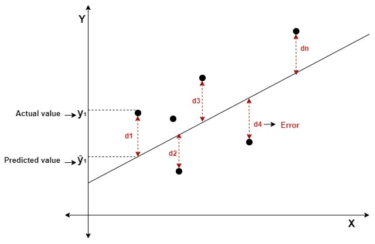

In the last part of the course, lessons 1.4 and 1.5, we discussed the linear regression model. However, we did not go into details on how the coefficients of the model are estimated. This lesson introduces the most popular method of estimation for the linear-regression model: the ordinary least squares estimator.
2.1.1: Sum of Squared Errors
We have a simple and multiple linear regression model in the following forms.
\begin{split} y_i & = \beta_0 + \beta_1 x_i + u_i \\ y_i & = \beta_0 + \beta_1 x_{1i} + \dots + \beta_k x_{ki} + u_i \end{split}
How do we estimate the parameters \overrightarrow\beta to create our best-fit lines/planes? One way we can do this is to find the best-fit line that minimises the sum of squared errors (SSE). This method is called the Ordinary Least Squares Estimator.
The sum of squared errors (SSE) is for simple linear regression is as follows:
\begin{split} SSE & = \sum\limits_{i=1}^n (y_i - \hat y_i)^2 \\ & = \sum\limits_{i=1}^n (y_i - (\hat \beta_0+ \hat\beta_1 x_i)) \\ & = \sum\limits_{i=1}^n (y_i - \hat\beta_0 - \hat\beta_1 x_i)^2 \end{split}
- The sum of squared errors is exactly as it sounds. Find the error, the distance between the actual y_i and predicted \hat y, which is y_i - \hat y, then square that error (y_i - \hat y_i)^2, then sum up for all observations i in the data.
- We get the second equation by substituting in the fitted values model, where \hat{y} = \hat\beta_0 + \hat\beta_1x_i.
For multiple regression, the intuition is the same:
\begin{split} SSE & = \sum\limits_{i=1}^n (y_i - \hat y_i)^2 \\ & = \sum\limits_{i=1}^n (y_i - (\hat \beta_0+ \hat\beta_1 x_{1i} + \dots + \hat\beta_kx_{ki})) \\ & = \sum\limits_{i=1}^n (y_i - \hat\beta_0 - \hat\beta_1 x_{1i} - \dots - \hat\beta_kx_{ki})^2 \end{split}
More inuitively, the errors of a best-fit line are highlighted in red. We will square each error, then sum all the errors up, to get the sum of squared errors for that best-fit line:

Why do we want to square the errors?
- This is because we do not care about the direction of errors - only the size of the errors.
- For example, in the figure above, the error d1 is positive, while d2 is negative. If we sum them together, those almost cancel out, giving us an error of near zero. However, we do not want them to be cancelled out - we care about the sizes of the errors.
- Thus, by squaring the errors, we make all errors positive, thus only focusing on the size of the errors, not their positive/negative direction.
A common question is why we square the errors, and don’t use absolute values of the errors. There are a few reasons this is the case.
- As we will see in the next section, minimising functions relies on finding the derivative of the function. An absolute value function is not differentiable at its vertex, making it difficult to minimise (as we are trying to minimise the errors).
- The least-squares method has several desirable properties for inference that we will cover mostly in lesson 2.3.
There is a estimator that uses the absolute values of the errors: the Least Absolute Deviations Estimator. However, it does not have all the nice property of the OLS estimator, so we will not worry about it.
2.2.2: Estimation for Simple Linear Regression
The Ordinary Least Squares (OLS) Estimator estimates the coefficients \beta_0 and \beta_1 by finding the values of \hat\beta_0 and \hat\beta_1 that result in the line with the smallest sum of squared errors (as discussed in the last section).
We can describe the goal of OLS in a more mathematical way:
The goal of the Ordinary Least Squares (OLS) Estimator is to find the values of \beta_0 and \beta_1 that make the following statement true:
\begin{split} (\hat{\beta}_0, \hat{\beta}_1) & = \min\limits_{\hat{\beta}_0, \hat{\beta}_1} \sum\limits_{i=1}^n (y_i - \hat{\beta}_0 - \hat{\beta}_1x_i)^2 \\ & =\min\limits_{\hat{\beta_0}, \hat{\beta}_1} S(\hat{\beta}_0, \hat{\beta}_1) \end{split}
Where function S is the sum of squared errors.
How do we minimise S (the function of the sum of squared errors)? From calculus, we know that a minimum/maximum of a function is where the derivative of the function is equal to 0.
Thus, let us find the partial derivative of the function S in respect to both \hat\beta_0 and \hat\beta_1, and set them equal to 0. These will be called the first-order conditions.
First Order Conditions
First, let us find the partial derivative of S in respect to \hat\beta_0:
\frac{\partial S(\hat{\beta}_0, \hat{\beta}_1)}{\partial \hat{\beta}_0} = \frac{\partial }{\partial \hat{\beta}_0} \left[ \sum\limits_{i=1}^n (y_i - \hat{\beta}_0 - \hat{\beta}_1x_i)^2 \right]
First, ignore the summation. The partial derivative of the internal section, using chain rule, is the following:
\frac{\partial}{\partial \hat{\beta}_0} \left[ (y_i - \hat{\beta}_0 - \hat{\beta}_1 x_i)^2 \right] = -2(y_i - \hat{\beta}_0 - \hat{\beta}_1 x_i)
But how do we deal with the summation? We know that there is the sum rule of derivatives [f(x) + g(x)]' = f'(x) + g'(x). Thus, we know we just sum up the individual derivatives to get the derivative of the sum:
\begin{split} \frac{\partial S(\hat{\beta}_0, \hat{\beta}_1)}{\partial \hat{\beta}_0} & = \sum\limits_{-i=1}^n \left[ -2(y_i - \hat{\beta}_0 - \hat{\beta}_1 x_i) \right] \\ & = -2 \sum\limits_{i=1}^n (y_i - \hat{\beta}_0 - \hat{\beta}_1 x_i) \end{split}
To find the value of \hat\beta_0 that minimises S, we set the derivative equal to 0. We can ignore the -2, since if the summation is equal to 0, the whole derivative will equal 0. Thus, the first order condition is:
\sum\limits_{i=1}^n (y_i - \hat{\beta}_0 - \hat{\beta}_1 x_i) = 0
Now, let us do the same for \hat\beta_1. Using the same steps as before
\begin{split} \frac{\partial S(\hat{\beta}_0, \hat{\beta}_1)}{\partial \hat{\beta}_1} & = \sum\limits_{i=1}^n \left[ -2x_i(y_i - \hat{\beta}_0 - \hat{\beta}_1 x_i) \right] \\ & = -2 \sum\limits_{i=1}^n x_i(y_i - \hat{\beta}_0 - \hat{\beta}_1 x_i) \end{split}
The first order condition for \hat\beta_1 will be (again, ignoring the -2 for the same reason as before):
\sum\limits_{i=1}^n x_i(y_i - \hat{\beta}_0 - \hat{\beta}_1 x_i) = 0
Thus, the first order conditions of OLS are:
\begin{split} & \sum\limits_{i=1}^n (y_i - \hat{\beta}_0 - \hat{\beta}_1 x_i) = 0 \\ & \sum\limits_{i=1}^n x_i (y_i - \hat{\beta}_0 - \hat{\beta}_1 x_i) = 0 \end{split}
Solving the System of Equations
We now have our two first-order conditions. Now, we have a 2-equation system of equations, with 2 variables.
- We can solve this through substitution - in the first equation, solve for \hat\beta_0 in terms of \hat\beta_1.
- Then, plug in \hat\beta_0 in terms of \hat\beta_1 into the second equation, thus making that a one-variable equation. We can solve that equation for \hat\beta_1, then find \hat\beta_0.
First, let us solve the first equation for \hat\beta_0 in terms of \hat\beta_1:
\begin{split} \sum\limits_{i=1}^n (y_i - \hat{\beta}_0 - \hat{\beta}_1 x_i) & = 0 \\ \sum\limits_{i=1}^n y_i - n \hat{\beta}_0 - \hat{\beta}_1 \sum\limits_{i=1}^n x_i & = 0 \\ -n\hat{\beta}_0 &= -\sum\limits_{i=1}^n y_i + \hat{\beta}_1\sum\limits_{i=1}^nx_i \\ \hat\beta_0 & = \frac{1}{-n} \left( -\sum\limits_{i=1}^n y_i + \hat{\beta}_1\sum\limits_{i=1}^n x_i \right) \\ \hat{\beta}_0 & = \frac{1}{n} \sum\limits_{i=1}^n y_i - \frac{1}{n}\hat{\beta}_1 \sum\limits_{i=1}^n x_i \\ \hat\beta_0& = \bar{y} - \hat{\beta}_1 \bar{x} \end{split}
Now, let us substitute our calculated \hat{\beta}_0 = \bar{y} - \hat{\beta}_1 \bar{x} into the \hat{\beta}_1 condition and solve for \hat{\beta}_1:
\begin{split} 0 & =\sum\limits_{i=1}^n x_i (y_i - \hat{\beta}_0 - \hat{\beta}_1 x_i) \\ & = \sum\limits_{i=1}^n \left[ x_i(y_i - [\bar{y} - \hat{\beta}_1\bar{x}] - \hat{\beta}_1x_i) \right] \\ & = \sum\limits_{i=1}^n \left[ x_i(y_i - \bar{y} - \hat{\beta}_1 (x_i - \bar{x})) \right] \\ & = \sum\limits_{i=1}^n \left[ x_i(y_i - \bar{y}) - x_i \hat{\beta}_1(x_i - \bar{x}) \right] \\ & = \sum\limits_{i=1}^n x_i (y_i - \bar{y}) - \hat{\beta}_1 \sum\limits_{i=1}^nx_i (x_i - \bar{x}) \end{split}
Useful Properties of Summation
Before we finish, here are a few key properties of summation
Property 1:
\sum\limits_{i=1}^n (x_i - \bar{x}) = 0
- This is because we can expand the left to \sum x_i - \sum \bar x.
- Then, we know \sum x_i = \sum \bar x (by the formula for mean), so \sum x_i - \sum \bar x = 0.
Property 2:
\sum\limits_{i=1}^n x_i(y_i - \bar{y}) = \sum\limits_{i=1}^n(x_i - \bar{x}) (y_i - \bar{y})
- This is because on the right side can expand to \sum [x_i(y_i - \bar y) - \bar x (y_i - \bar y)].
- Then, split into \sum x_i (y_i - \bar y) - \bar x \sum (y_i - \bar y).
- We know that by property 1 (which applies to any variable), \sum (y_i - \bar y) = 0. Thus, the right side disappears, and we are left with \sum x_i (y_i - \bar y).
Property 3:
\sum\limits_{i=1}^n x_i(x_i - \bar{x}) = \sum\limits_{i=1}^n(x_i - \bar{x})^2
- Start by expanding right side to \sum [ x_i ( x_i - \bar x) - \bar x (x_i - \bar x)]
- Which splits into \sum x_i (x_i - \bar x) - \bar x \sum (x_i - \bar x)
- By the first property, we know \sum x_i - \bar x = 0, so we are only left with \sum x_i (x_i - \bar x)
Knowing these properties of summation, we can transform what we had before:
\begin{split} 0 & = \sum\limits_{i=1}^n x_i (y_i - \bar{y}) - \hat{\beta}_1 \sum\limits_{i=1}^nx_i (x_i - \bar{x}) \\ 0 & = \sum\limits_{i=1}^n(x_i - \bar{x})(y_i - \bar{y}) - \hat{\beta}_1 \sum\limits_{i=1}^n (x_i - \bar{x})^2 \\ \hat{\beta}_1 \sum\limits_{i=1}^n (x_i - \bar{x})^2 & = \sum\limits_{i=1}^n(x_i - \bar{x})(y_i - \bar{y}) \\ \hat{\beta}_1 & = \frac{\sum_{i=1}^n (x_i - \bar{x})(y_i - \bar{y})}{\sum_{i=1}^n(x_i - \bar{x})^2} \end{split}
Note that the numerator is equivalent to the formula of covariance Cov(x,y), and the denominator is equal to the variance Var(x).
Thus, the OLS estimate \hat\beta_1 (slope) of the linear regression model is:
\hat{\beta}_1 = \frac{\sum_{i=1}^n (x_i - \bar{x})(y_i - \bar{y})}{\sum_{i=1}^n(x_i - \bar{x})^2} = \frac{Cov(x, y)}{Var(x)}
This is the expected change in y given a one unit increase in x.
- Remember, this is the relationship between x and y, not the causal effect.
Of course, we still need to find \hat\beta_0 (the slope). We found that \hat\beta_0 = \bar{y} - \hat{\beta}_1 \bar{x} earlier, so we just plug our solution of \hat\beta_1 in.
And now, we have our estimates \hat\beta_0 and \hat\beta_1, and thus we now have a best-fit line and an estimate of the relationship between x and y.
Note: in lesson 1.6, we will discuss if the OLS estimator is a good estimator or not. For now, we just care about the mechanics of the estimator.
2.2.3: Multiple Linear Regression with Linear Algebra
This section contains Linear Algebra. It is not essential that you understand this section, however, it can be helpful to develop intuition.
In lesson 1.5, we introduced the multiple linear regression model as the following:
y_i = \beta_0 + \beta_1x_{1i} + \dots + \beta_k x_{ki} + u_i
However, it can be very useful to also see the multiple linear regression model in terms of linear algebra (vectors and matrices).
- The main reason for this is because this will make the estimation process far easier.
The i’th observation can be re-written in vector form as following:
y_i = x_i'\beta + u_i, \text{ where }\beta = \begin{bmatrix}\beta_0 \\ \beta_1 \\ \vdots \\ \beta_k\end{bmatrix} \text{ and }x_i = \begin{bmatrix}1 \\x_{1i} \\\vdots \\x_{ki}\end{bmatrix}
- The x_i' in the equation is the transpose of x_i, to make matrix multiplication possible.
- The first element of the x_i matrix is 1, since 1 \times \beta_0 gives us the first parameter (intercept) in the linear model.
- Thus, when multiplying out, we get the same equation as the original multiple linear regression.
Note how we have the subscript i representing each individual observation. With a vector, we can expand out these subscripts.
- For example, instead of y_i, we could have a vector with y_1, y_2, \dots, y_n (assuming we have n observations).
- Same for x'_i, which can be expanded into a vector of x_1', x_2', \dots x_n', and for the error term u_i, which can be expanded into a vector of u_1, u_2, \dots, u_n.
Using this logic, we can obtain the following, with the x_i' and \beta being vectors within a vector:
\begin{split} \begin{pmatrix}y_1 \\ y_2 \\ \vdots \\ y_n\end{pmatrix} & = \begin{pmatrix}x_1'\beta + u_1 \\ x_2'\beta + u_2 \\ \vdots \\ x_n'\beta + u_n\end{pmatrix} \\ & \\ \begin{pmatrix}y_1 \\ y_2 \\ \vdots \\ y_n\end{pmatrix}& = \begin{pmatrix}x_1'\beta \\ x_2'\beta \\ \vdots \\ x_n'\beta\end{pmatrix} + \begin{pmatrix}u_1 \\ u_2 \\ \vdots \\ u_n\end{pmatrix} \end{split}
Since \beta vector appears as a common factor for all observations i=1,...,n, we can factor it out and have an equation:
\begin{pmatrix}y_1 \\ y_2 \\ \vdots \\ y_n\end{pmatrix} = \begin{pmatrix}x_1' \\ x_2' \\ \vdots \\ x_n'\end{pmatrix} \space \beta + \begin{pmatrix}u_1 \\ u_2 \\ \vdots \\ u_n\end{pmatrix}
We can expand the x_1',...,x_n' vector into a matrix. Remember that each x_1',...,x_n' is already a vector of different explanatory variables. So, we get the following result:
y = X \beta + u, \text{ where } X = \begin{bmatrix}1 & x_{21} & \dots & x_{k1} \\1 & x_{22} & \dots & x_{k2} \\\vdots & \vdots & \vdots & \vdots \\1 & x_{2n} & \dots & x_{kn}\end{bmatrix}
The multiple linear regression can be expressed in linear algebra as:
y = X \beta + u
Where vector y is equal to:
y = \begin{pmatrix}y_1 \\ y_2 \\ \vdots \\ y_n\end{pmatrix}
Where matrix X is equal to:
X = \begin{bmatrix}1 & x_{21} & \dots & x_{k1} \\1 & x_{22} & \dots & x_{k2} \\\vdots & \vdots & \vdots & \vdots \\1 & x_{2n} & \dots & x_{kn}\end{bmatrix}
- Where the notation for elements of X is x_{ki}, with i being the unit of observation i = 1, \dots n, and k being the explanatory variables index.
- The first column of X is a vector of 1, which exists because these 1’s are multiplied with \beta_0 in our model (see below).
Where vector \beta is equal to:
\beta = \begin{pmatrix}\beta_0 \\ \beta_1 \\ \vdots \\ \beta_k\end{pmatrix}
The point of expressing the model in linear algebra is that it makes the estimation process far easier, as we will see in the next section.
2.2.4: Mathematics of the Ordinary Least Squares Estimator
This section contains Linear Algebra. It is not essential that you understand this section, however, it can be helpful to develop intuition.
As we remember from 1.4.4, the goal of Ordinary Least Squares Estimation is to minimise the sum of squared errors. The sum of squared errors in multiple regression is:
\begin{split} SSE & = \sum\limits_{i=1}^n (y_i - \hat y_i)^2\\ & = \sum\limits_{i=1}^n (y_i - \hat{\beta}_0 - \hat{\beta}_1x_{1i} - \hat{\beta}_2x_{2i} - ... - \hat\beta_kx_{ki})^2 \end{split}
Similar to our simple linear regression (but with additional variables), our minimisation condition is:
\begin{split} (\hat{\beta}_0, \hat{\beta}_1, \hat{\beta}_2, ...) & = \min\limits_{(\hat{\beta}_0, \hat{\beta}_1, \hat{\beta}_2, ...)} (y_i - \hat{\beta}_0 - \hat{\beta}_1x_{1i} - \hat{\beta}_2x_{2i} ...)^2 \\ & = \min\limits_{(\hat{\beta}_0, \hat{\beta}_1, \hat{\beta}_2, ...)} S(\hat{\beta}_0, \hat{\beta}_1, \hat{\beta}_2, ...) \end{split}
Taking the partial derivatives of each parameter like in simple linear regression (see 1.4.4), we get first order conditions:
\begin{split}& \sum\limits_{i=1}^n (y_i - \hat{\beta}_0 - \hat{\beta}_1x_{1i} - \hat{\beta}_2x_{2i}...) = 0 \\& \sum\limits_{i=1}^n x_{1i}(y_i - \hat{\beta}_0 - \hat{\beta}_1x_{1i} - \hat{\beta}_2x_{2i}...) = 0 \\ & \sum\limits_{i=1}^n x_{2i} (y_i - \hat{\beta}_0 - \hat{\beta}_1x_{1i} - \hat{\beta}_2x_{2i}...) = 0 \end{split}
- and so on for x_{3i}, ..., x_{ki}.
This system of equations includes k+1 variables and k+1 equations, which is way too difficult to solve.
Instead, we can use linear algebra. Let us define our estimation vector \hat{\beta} as the value of \hat\beta that minimises the sum of squared errors:
\hat{\beta} = \min\limits_{b} (y - Xb)' (y - Xb) = \min\limits_b S(b)
- (y - Xb) is our error, since \hat y = Xb,
We can expand S(b) as follows:
\begin{split} S(b) & = y'y - b'X'y - y'Xb + b'X'Xb \\ & = y'y - 2b'X'y + b'X'Xb \end{split}
Taking the partial derivative in respect to b:
\frac{\partial S(b)}{\partial b} = \begin{pmatrix}\frac{\partial S(b)}{\partial b_1} \\\vdots \\\frac{\partial S(b)}{\partial b_k}\end{pmatrix}
Differentiating with the vector b yields:
\frac{\partial S(b)}{\partial b} = -2X'y + 2X'Xb
Evaluted at \hat{\beta}, the derivatives should equal zero (since first order condition of finding minimums):
\frac{\partial S(b)}{\partial b} \biggr|_{\hat{\beta}} = -2X'y + 2X'X \hat{\beta} = 0
When assuming X'X is invertable, we can isolate \hat{\beta} to find the solution to OLS:
\begin{split} -2X'y + 2X'X \hat{\beta} & = 0 \\ 2X'X\hat\beta & = 2X'y \\ \hat\beta & = (2X'X)^{-1} 2 X'y \\ \hat\beta & = (X'X)^{-1}X'y \end{split}
The Ordinary Least Squares Estimate of vector \hat\beta for multiple linear regression is:
\hat{\beta} = (X'X)^{-1} X'y
Once we have estimates of \hat{\beta}, we can plug them into our linear model to obtain fitted values:
\begin{split} \hat{y} & = X\hat{\beta} \\ & = X(X'X)^{-1} X'y \end{split}
Note: in lesson 2.3, we will discuss if the OLS estimator is a good estimator or not. For now, we just care about the mechanics of the estimator.
2.5.5: Regression Anatomy and Controlling for Confounders
We talked about how multiple linear regression allows us to control for confounders in lesson 1.5. But what does that mean? How does it affect our interpretations of coefficients?
The Regression Anatomy Theory, also called the Frisch–Waugh–Lovell (FWL) theorem, illustrates this concept. Take our standard multiple linear regression:
y_i = \beta_0 + \beta_1 x_{1i} + \beta_2 x_{2i} + ... + \beta_k x_{ki} + u_i
Let us say we are interested in x_1 (this can be generalised to any explanatory variable x_j). Let us make x_1 the outcome variable of a regression with explanatory variables x_2, ..., x_k:
x_{1i} = \gamma_0 + \gamma_1 x_{2i} + ... + \gamma_{k-1}x_{ki} + \widetilde{r_{1i}}
- Where \gamma_0, ..., \gamma_{k-1} are coefficients.
- Where \widetilde{r_{1i}} is the error term.
The error term is \widetilde{r_{1i}}, which represents the part of x_{1i} that are uncorrelated to x_2, ..., x_k.
- In other words, \widetilde{r_{1i}} is the part of x_1 that cannot be explained by any other explanatory variable x_2, ..., x_k. (uncorrelated with them)
Now, take the regression of with outcome variable y, with all explanatory variables except x_1:
y_i = \delta_0 + \delta_1 x_{2i} + ... + \delta_{k-1} x_{ki} + \widetilde{y_i}
- Where \delta_0, ..., \delta_{k-1} are coefficients.
- Where \widetilde {y_i} is the error term.
The error term is \widetilde{y_i}, which is the part of y_i that cannot be explained by x_2, ..., x_k (uncorrelated with them).
Since \widetilde{y_i} is not explained by x_2, ..., x_k, variable x_1 must be the one explaining \widetilde{y_i}.
- But, it is not the whole of x_1 explaining \tilde{y_i}.
- This is since x_1 may also correlated with x_2, ..., x_k, and the correlated parts of x_1 with x_2, ..., x_k are already picked up in the regression by the coefficients of x_2, ..., x_k.
Thus, \widetilde{y_i} must be explained by the part of x_1 that is uncorrelated and not explained by x_2, ..., x_k, which we derived earlier as \widetilde{r_{1i}}.
Thus, we can create another regression with explanatory variable \widetilde{x_{1i}} and outcome variable \widetilde{y_i}.
\widetilde{y_i} = \alpha_0 + \alpha_1 \widetilde{r_{1i}} + u_i
We can plug \widetilde{y_i} back into our regression of y_i with explanatory variables x_2 ..., x_k, and re-arrange:
\begin{split} y_i & = \delta_0 + \delta_1 x_{2i} + ... + \delta_{k-1} x_{ki} + \widetilde{y_i} \\ y_i & = \delta_0 + \delta_1 x_{2i} + ... + \delta_{k-1} x_{ki} + \alpha_0 + \alpha_1 \widetilde{r_{1i}} + u_i \\ y_i & = (\delta_0 + \alpha_0) + \alpha_1 \widetilde{r_{1i}} + \delta_1x_{2i} + ... + \delta_{k-1} x_{ki} + u_i \end{split}
As we can see, this new regression mirrors the original standard multiple linear regression:
\begin{split} y_i & = (\delta_0 + \alpha_0) + \alpha_1 \widetilde{r_{1i}} + \delta_1x_{2i} + ... + \delta_{k-1} x_{ki} + u_i \\ y_i & = \beta_0 + \beta_1 x_{1i} + \beta_2 x_{2i} + \dots + \beta_k x_{ki} + u_i \end{split}
- The \beta_0 in the original is analogous to the (\delta_0 + \alpha 0).
- The \beta_1 x_{1i} in the original is analogous to \alpha_1 \widetilde{r_{1i}}.
- The \beta_2 x_{2i} + \dots + \beta_k x_{ki} is analogous to \delta_1 x_{2i} + ... + \delta_{k-1} x_{ki}.
- The u_i is in both regressions.
Importantly we know the \beta_1 x_{1i} in the original is analogous to \alpha_1 \widetilde{r_{1i}}. Thus, the estimate of \alpha_1 will be the same as \beta_1 in the original regression.
- The coefficient \alpha_1 (which is equal to \beta_1) explains the expected change in y, given an increase in the part of x_1 uncorrelated with x_2, ..., x_k.
- So essentially, we have partialed out the effect of the other explanatory variables, and only focus on the effect on y of the uncorrelated part of x_1 (which is \widetilde{r_{1i}})
Or in other words, OLS in multiple linear regression estimates the effect of \widetilde{r_{1i}} on y.
- We can apply this to any explanatory variable x_1, \dots, x_k. The uncorrelated parts of any explanatory variable x_j are labelled \widetilde{r_{ji}}.
Using all this info, we can interpret the meaning of any coefficient \hat\beta_j on the relationship between x_j and y:
The interpretation of \hat\beta_j coefficient, multiplied to variable x_j is:
- When x_j increases by one unit, there is an expected \hat\beta_j unit change in y, holding all other explanatory variables constant.
2.2.6: Regression Anatomy Formula for OLS Estimation
In the last section, we discussed the idea of regression anatomy, and how including confounding variables changes the estimates.
- That instead of finding the effect of x_j entirely on y, we partial out the effect of other explanatory variables, and only find the effect of the uncorrelated part of x_j (labelled \widetilde {r_{ji}}) on y.
We have already discussed the mathematical solution of OLS in relation to linear algebra (see 1.6.4). However, we can also express the estimation solution of \hat\beta_j in relation to the regression anatomy formula.
Before we start, here are a few key properties of summation
Property 1:
\sum\limits_{i=1}^n (x_i - \bar{x}) = 0
- This is because we can expand the left to \sum x_i - \sum \bar x.
- Then, we know \sum x_i = \sum \bar x (by the formula for mean), so \sum x_i - \sum \bar x = 0.
Property 2:
\sum\limits_{i=1}^n x_i(y_i - \bar{y}) = \sum\limits_{i=1}^n(x_i - \bar{x}) (y_i - \bar{y})
- This is because on the right side can expand to \sum [x_i(y_i - \bar y) - \bar x (y_i - \bar y)].
- Then, split into \sum x_i (y_i - \bar y) - \bar x \sum (y_i - \bar y).
- We know that by property 1 (which applies to any variable), \sum (y_i - \bar y) = 0. Thus, the right side disappears, and we are left with \sum x_i (y_i - \bar y).
Property 3:
\sum\limits_{i=1}^n x_i(x_i - \bar{x}) = \sum\limits_{i=1}^n(x_i - \bar{x})^2
- Start by expanding right side to \sum [ x_i ( x_i - \bar x) - \bar x (x_i - \bar x)]
- Which splits into \sum x_i (x_i - \bar x) - \bar x \sum (x_i - \bar x)
- By the first property, we know \sum x_i - \bar x = 0, so we are only left with \sum x_i (x_i - \bar x)
Knowing these properties of summation, let us begin.
Let us start off with the OLS estimator for simple linear regression, which calculates the \hat\beta_1, the relationship between x and y (which we derived in 1.4.4):
\hat{\beta}_1 = \frac{\sum_{i=1}^n (x_i - \bar{x})(y_i - \bar{y})}{\sum_{i=1}^n(x_i - \bar{x})^2}
Let us look at the numerator. Let us expand the numerator:
\begin{split} & \sum\limits_{i=1}^n (x_i - \bar{x})(y_i - \bar{y}) \\ = & \sum\limits_{i=1}^n [(x_i - \bar x)y_i - (x_i - \bar x) \bar y] \\ = & \sum\limits_{i=1}^n(x_i - \bar x)y_i - \sum\limits_{i=1}^n (x_i - \bar x) \bar y \\ = & \sum\limits_{i=1}^n(x_i - \bar x)y_i - \bar y\sum\limits_{i=1}^n (x_i - \bar x) \\ \end{split}
We know that \sum (x_i - \bar x) = 0 from the above properties. Thus, we can further simplify to:
\begin{split} = & \sum\limits_{i=1}^n(x_i - \bar x)y_i - \bar y\sum\limits_{i=1}^n (x_i - \bar x) \\ = & \sum\limits_{i=1}^n(x_i - \bar x)y_i - \bar y(0) \\ = & \sum\limits_{i=1}^n(x_i - \bar x)y_i \end{split}
Thus, putting the numerator back in, we now we have the equation:
\hat{\beta}_1 = \frac{\sum_{i=1}^n (x_i - \bar{x})y_i}{\sum_{i=1}^n(x_i - \bar{x})^2}
We know that in multiple linear regression, \hat\beta_j is not the full relationship between x_j and y. Instead, it is the relationship of the part of x_j that is uncorrelated with all other explanatory variables, and y.
- So in other words, it is the relationship of \widetilde{r_{ji}} on y.
Remember, in the last section, we defined \widetilde{r_{ji}} as the error term in a regression of x_j on all other explanatory variables:
x_{ji} = \gamma_0 + \gamma_1 x_{1i} + ... + \gamma_{k-1}x_{ki} + \widetilde{r_{ji}}
Thus, \widetilde{r_{ji}} is the part of x_j uncorrelated with any other explanatory variable.
So, since multiple linear regression is the relationship of \widetilde{r_{ji}} on y, instead of x on y, let us replace the x’s in our formula with \widetilde{r_{ji}}:
\hat{\beta}_j = \frac{\sum_{i=1}^n (\widetilde{r_{ji}} - E(\widetilde{r_{ji}}))y_i}{\sum_{i=1}^n(\widetilde{r_{ji}} - E(\widetilde{r_{ji}}))^2}
We can actually simplify this more with a property of regression - remember, that the error term of a regression u, should be such that E(u)=0.
We know that \widetilde{r_{ji}} is also the error term of a regression, so, E(\widetilde{r_{ji}}) = 0 as well. Plugging that into our equation, we can get the regression anatomy formula for OLS.
\begin{split} \hat{\beta}_j & = \frac{\sum_{i=1}^n (\widetilde{r_{ji}} - E(\widetilde{r_{ji}}))y_i}{\sum_{i=1}^n(\widetilde{r_{ji}} - E(\widetilde{r_{ji}}))^2} \\ \\ & = \frac{\sum_{i=1}^n (\widetilde{r_{ji}} - 0)y_i}{\sum_{i=1}^n(\widetilde{r_{ji}} - 0)^2} \\ \\ & = \frac{\sum_{i=1}^n \widetilde{r_{ji}} \ y_i}{\sum_{i=1}^n \widetilde {r_{ji}}^2} \end{split}
The OLS estimate of coefficient \beta_j can be written in terms of regression anatomy as follows:
\hat{\beta}_j = \frac{\sum_{i=1}^n \widetilde{r_{ji}} \ y_i}{\sum_{i=1}^n \widetilde {r_{ji}}^2}
Note: in lesson 2.3, we will discuss if the OLS estimator is a good estimator or not. For now, we just care about the mechanics of the estimator.
2.2.7: R-Squared and Goodness of Fit
For each observation, we know that the actual y_i value is the predicted \hat y_i plus the residual term \hat u_i. Thus:
y_i = \hat y_i + \hat u_i
Now, let us define these three concepts: the total sum of squares (SST), explained sum of squares (SSE), and residual sum of squares (SSR):
\begin{split} & SST = \sum\limits_{i=1}^n (y_i - \bar y)^2 \\ & SSE = \sum\limits_{i=1}^n (\hat y_i - \bar y)^2 \\ & SSR = \sum\limits_{i=1}^n (\hat u_i)^2 \end{split}
- The SST explains the total amount of variation in y
- The SSE is the amount of variation in y explained by our model
- The SSR is the amount of variation in y not explained by our model
Let us look at the total sum of squares (SST). We can manipulate it as follows:
\begin{split} SST & = \sum\limits_{i=1}^n (y_i - \bar y)^2 \\ & = \sum\limits_{i=1}^n(y_i - \hat y_i+ \hat y_i - \bar y)^2 \\ & = \sum\limits_{i=1}^n((y_i - \hat y_i)+ \hat y_i - \bar y)^2 \\ & = \sum\limits_{i=1}^n[\hat u_i + \hat y_i - \bar y]^2 \\ & = \sum\limits_{i=1}^n[\hat u_i^2 + \hat u_i \hat y_i - \hat u_i \bar y + \hat y_i \hat u_i + \hat y_i^2 - \hat y_i \bar y-\bar y \hat u_i -\bar y \hat y_i+\hat y^2_i] \\ & = \sum\limits_{i=1}^n[ \hat u_i^2 + 2 \hat u_i \hat y_i+ \hat y_i^2 - 2 \hat u_i \bar y - 2 \hat y_i \bar y + \bar y ^2] \end{split}
By a property of linear regression, \sum \hat y_i \hat u_i = 0. Knowing this, we can further simplify to:
\begin{split} SST & = \sum\limits_{i=1}^n[ \hat u_i^2 + \hat y_i^2 - 2 \hat u_i \bar y - 2 \hat y_i \bar y + \bar y ^2] \\ & = \sum\limits_{i=1}^n[\hat u_i^2 + (\hat y_i - \bar y)^2]\\ & = \sum\limits_{i=1}^n \hat u_i^2 + \sum\limits_{i=1}^n(\hat y_i - \bar y)^2 \\ & = SSE + SSR \end{split}
This makes sense: After all, SSE is the squared errors explained by the model, and SSR is the residual (non-explained) parts of the model, so together, they should be equal to the total sum of squares.
Using these properties, we can create a statistic which explains how well our model explains the variation in y. This statistic is called R^2.
The R-squared metric is a metric describing how good of a fit our model is. Mathematically:
R^2 = \frac{SSE}{SST} = 1 - \frac{SSR}{SST}
What does this R^2 value mean?
- Well SSE is the amount of variation in y explained by our model, and SST is the total amount of variation in y.
- Thus, R^2 is the proportion of variation in y explained by our model.
R^2 is always between 0 and 1:
- This is because it is a proportion, so and 0 ≤ SSE ≤ SST, so this must be true.
- Values closer to 1 mean our model explains the variance in y more
- Values closer to 0 mean our model explains less of the variance in y.
R^2 is also equal to the correlation coefficient between y_i and \hat y_i. In simple linear regression, R^2 is also equal to the square of the correlation coefficient r between x and y.
There is an additional property with R^2 in multiple linear regression: R^2 never falls when another explanatory is added to the regression.
- So essentially, any explanatory variable added to the regression will always boost R-squared.
This shows the downside of R-squared as a metric - if we just include random variables, by chance, these variables will explain the variation in y.
- Thus, focusing on R-squared can result in models with silly or nonsensical explanatory variables.
We will discuss the importance of careful model selection in the later parts of the course, when we move to more applied statistics for social science purposes.